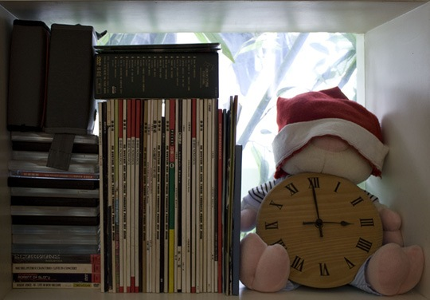
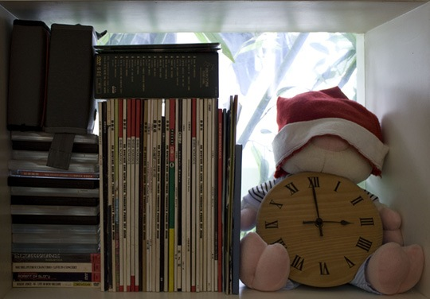
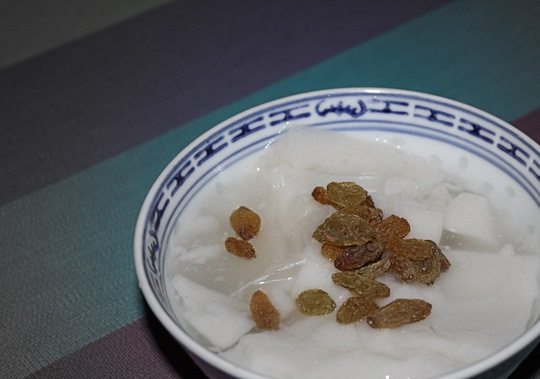
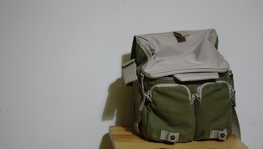
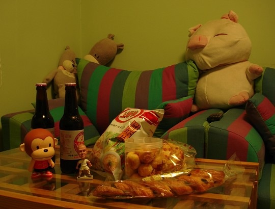
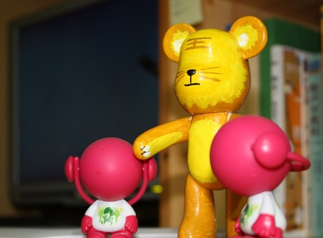
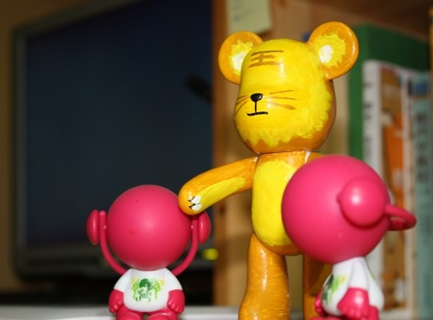

和晓禾同学在一起的日子，电影看得很多，每隔一段时间就会觉得有点累，不想再看，这个时候找点《洋葱电影》这类的搞笑片来看还是可以，反正不用动脑动情。但我目前最想看的是《文雀》，就算是在这看累了的日子里。 杜琪峰目前算是法国最受欢迎的中国导演，不知道为什么法国人那么喜欢看他的电影，我心想那么地道的粤语港片，当中有多少的方言翻译，意味的传达，他们能明白么? 不过自己支持的电影能有更多的人喜欢总是一件好事，况且那些法国人都是去的电影院，并且在上映了那么久以后，没有枪版漏出来，实在是让人又爱又恨。 《文雀》是杜琪峰写给香港的一封情书，没有以往的枪林弹雨和血腥残酷，只有对香港悠然的一份情。随着任达华的单车，带领我们穿梭在香港的小街小巷，领略这座城市的魅力。我也是个有香港情结的人，并且我的情结从不是由购物中心，商业中心而来。所以这部电影正中我的口味，那些小街市，那些茶餐厅，隐隐约约和家乡有那么几分相似，很南方广东的特色。很窄的路，有点杂乱的楼房规划，时不时有一个小斜坡，当然还有茶餐厅糖水铺等。 陈志云采访黄秋生的时候问道：会不会进军好莱坞？秋生答：如何进军好莱坞，说起来好像很劲，但有多少人真的深刻了解美国的文化，当你对别人的文化没有很深的了解的时候，你如何演好一个当地的律师，等等。不过最后秋生也说自己也有可能凭实力打进好莱坞。不同的文化还是能寻求到理解的，正如这部电影另外一个勾起我无限想看欲念的另外一个因素——电影配乐，竟也是来自法国人之手。把法国的浪漫优雅带到如此有中国特色的音乐里，制成这张精美的OST，国内没有多少电影原声能达到这个水平。 说的这些东西，全是建立在我还没有看电影的基础上。不过我已经把电影原声听了很多遍。放上其中一段，聆听的同时可以看看在电影《文雀》中出现的香港街景。越看，越有点想回家。 http://www.coletree.com/upload/Pickpockets.mp3 由于之前照片属于FLICKR上一位朋友的，她说不方便转载，所以请各位想看照片的人移步到http://www.flickr.com/photos/9216038@N03/ 这位朋友非常有心思，跟着好多部电影，挨个去把其中拍摄的景点找了出来，拍照留存，实在让人佩服，有兴趣的可以去看看。
 
爱上夏日冰冰凉
 一直不喜欢夏天，总是出太多的汗，黏糊糊的燥热感让人浑身不自在。以前在学校的时候，习惯晚上不吃饭，在宿舍吹着电扇，抱半个冰镇西瓜舀着吃。现在有了独立的厨房，总想着自己捣鼓点什么，钟爱的杏仁豆腐就成了这个夏天我的第一款冰品尝试。 特意去超市买了琼脂，放凉水里泡了好一会，再煮化。找牛奶的时候发现家里的存货都被小树喝光了，只好临时换成了豆浆，还是黑豆浆，还好做出来还是白白的。加入豆浆和杏仁粉搅匀，再有些心痛地加上本来打算用来煲猪手汤的淡奶，听别人说要加淡奶才够爽滑，剩下半盒，小心地存起来打算周末再来做个别的。煮开以后，最痛苦的是不能马上喝，还得晾凉放冰箱冷藏，冻上一晚。 第二天回家，迫不及待打开冰箱，杏仁豆腐已经结成果冻状了。盛到碗里拿勺切成一小块一小块，虽然不如三元梅园切得好，但切的时候，豆腐的韧性，已经隔着勺子的边缘传到手上，那是种能唤醒味蕾的触觉，召唤着你去品尝。 第一次吃的时候放了糖水和葡萄干，含在嘴里，滑滑嫩嫩，清清凉凉，还有淡淡的豆浆清香，后来小树同学嫌不够甜，就改放蜂蜜了。广东人怎么就这么爱吃甜的嘞？对着电脑，一边吃，一边玩功夫熊猫，空调没氟了也一直懒得找人来加，吹着电扇，也很舒服。
我终于又有相机了
第一个数码相机CANON A85 从去年坏掉到现在都有大半年了，以致一直没有怎么拍过照。上个周末终于狠下心，咬咬牙，从ATM取了几次我们的血汗钱，买了新的相机。虽说内心喜悦，但想想挥霍的血汗钱也是心疼。还好有小禾支持，送了我一个很贵很好看的包：反正以后好好拍就是啦，钱财身外物。  欧洲杯那么快就结束了，感觉这届欧洲杯不是很好看。最后西班牙夺冠，还是比较喜欢的结果。我们记忆中的这届欧洲杯，以下图开始，以下图的下图结束。  最近参加了师弟他们的一个活动，每周大家都聚聚，在学校北门的咖啡店画画玩，成果如下。好久没画过画了。虽是瞎画，不过感觉也挺好，画画的时候觉得时间过得很快，脑里似乎也可以什么都不想。以后老了，希望可以带个画板到处走走。  

The beauty of the code
去年听到现在的一首歌，出自RADIOHEAD的去年专辑，是我最喜欢的一首
蜘蛛‧小诗‧烂墙角
昨晚梦见被两只硕大的蜘蛛追杀，任凭我一身功夫也招架不住，惊醒过来，一分钟的样子，闹钟就响了。想起大概是前几日拿新买的电动灭蝇拍手刃了一只蜘蛛加上昨晚看了《功夫熊猫》有关。那只黄底黑点的蜘蛛，似乎是从水槽里爬出来的，脚伸展开有拇指指腹那么大，我也不敢去捉它，只能拿新买的电动灭蝇拍去电它，触到的时候噼里啪啦电光火石了一番，接着一股焦味，就看它躺那儿不动了。当时突然就觉得全身酸麻，也不敢再去碰它，任凭它躺在那儿，等小树同学回来，才用水冲回了下水道。 很久没写东西，很久没什么想写，最近看电影，也不像以前看完都要写点啥，好像忽然有一天，发现自己喜欢的，想写的，写来写去也都差不多，不喜欢的就不会想着要写。好像好的，都褒腻了，烂的根本就懒得理它。最近在黄集伟的博客上看到傅天琳汶川大地震后的小诗《我的孩子》，中间有句：
妈妈正细心裁剪一小块一小块黑夜 作你棉衣的衬
恍惚中有种闻到遥远泥土味的感觉，像是不透彻的清爽，从前一个世纪渗透过来。感觉美好。 网上又有关于2050年的灭世预言流传，好像这样的预言一直存在，一个个被推翻，又一个个诞生。也难怪，如今地球风云突变，一年才过半，就遭遇了如此多灾难。北京现在也变得跟南方一样，终日阴雨，上上周五的一场大雨，让我们住的地方也遭了殃。下班堵车两个小时，一进家门，发现电脑上方的墙角掉了好大一块皮下来。房管所还没来得及修，卫生间吊顶的四条顶角线在某个半夜也“哐”地砸了下来。北京的小破房啊，还是不要买的好。突然想到一句话，套用一下也很对，生活，就是一个问题，紧接着另一个问题。
网络气球赛跑大赛
网络气球赛跑大赛开始罗。真是佩服策划设计这一活动的人，互动网页设计已经越来越朝着这个方向发展了，真正的互动来源于用户之间，而不仅仅是一个用户对网页的操作上。在这个活动里，有基于各个网站的map，是一个可以激发我们更多想法的创意点。还有一个新词internet miles,互联网的世界也可视觉化描述了。 我们的网站也加进了这个活动里来，时不时都会看到有气球飘过。要是哪位有时间，网速又快的，可以登录http://www.playballoonacy.com/，在左上角搜索叫coletree的气球，给我们吹几下风。 
{kind=link}
UNIQLO
UNIQLO这一系列线上广告，实在是让人赞叹，除了佩服为他们做这些设计的设计公司外，也很佩服UNIQLO公司有这样的胆量和眼光去认同并实行这一套方案。今天又在这其中的一个网站玩得不亦乐乎。放出我的成果来。一开始还不知道有那么多角色可以选的，还好，不然得玩到什么时候。大家点击看看，也可以自己去试试，体验一下DJ和混音的感觉。
楼价高 买不起？ 来住我们的大楼好了
 闲余时间建了一个摩天大楼小网页，欢迎大家入住。网页功能……没什么功能，全是人工的，-_-! 简单的说就是你画好你的那层楼，然后把图发给我，我帮大家加上就是了。通过点击网页右侧的向上、向下箭头按钮，（用键盘的上下键也行）可以往上往下浏览。鼠标移到具体楼层上的时候，右侧信息框可以显示该楼层的作者 及其网站（博客）地址，方便各位互相拜访。 有兴趣参与到这里来的朋友，需要做的就是把自己那层的图画好，然后发给我图就可以了（jpg,png都可）。至于作图的说明，麻烦下载这个文档看看就很清楚了——点此下载。寄邮件给我的记得附上你的名字，网站（博客）地址，还有你的图，这三样就可以了。寄给我的方法在这个文档里也有。 希望各位做设计的朋友或喜欢画画的朋友，闲暇时光，天马行空，发挥主观能动性，帮忙参与，把楼盖得高一点，不甚感激！此外不管你参与与否，如果你觉得身边有朋友会有兴趣参与这个的话，麻烦你把这个信息转告他/她，谢谢！ 最后，关于这个网页，大家以下地址看吧，还会不断完善。 http://www.coletree.com/lab/skyscraper/
闲余时间建了一个摩天大楼小网页，欢迎大家入住。网页功能……没什么功能，全是人工的，-_-! 简单的说就是你画好你的那层楼，然后把图发给我，我帮大家加上就是了。通过点击网页右侧的向上、向下箭头按钮，（用键盘的上下键也行）可以往上往下浏览。鼠标移到具体楼层上的时候，右侧信息框可以显示该楼层的作者 及其网站（博客）地址，方便各位互相拜访。 有兴趣参与到这里来的朋友，需要做的就是把自己那层的图画好，然后发给我图就可以了（jpg,png都可）。至于作图的说明，麻烦下载这个文档看看就很清楚了——点此下载。寄邮件给我的记得附上你的名字，网站（博客）地址，还有你的图，这三样就可以了。寄给我的方法在这个文档里也有。 希望各位做设计的朋友或喜欢画画的朋友，闲暇时光，天马行空，发挥主观能动性，帮忙参与，把楼盖得高一点，不甚感激！此外不管你参与与否，如果你觉得身边有朋友会有兴趣参与这个的话，麻烦你把这个信息转告他/她，谢谢！ 最后，关于这个网页，大家以下地址看吧，还会不断完善。 http://www.coletree.com/lab/skyscraper/
回天国的路有时候很长，有时候很短
好久没更新日志，这段日子不太好受，先是地震中的种种，悲伤与无力，忿忿不平或无可奈何，接着是感冒发烧，然后在六一前夕收到好友父亲车祸去世的消息，一切来得突然，一时不知如何安慰，电话过去，好友的声音在灵堂的嘈杂人声中显得很平静，但我还是听出他的声音里有些压抑的颤抖。没说太多，也不敢说太多。只是一些寻常得有些疏离的问候，自己都觉得无力。 今天一直在听World’s End Girlfriend,中间还看了一次“We are the massacre”的MV，我被彻底震撼了，在满眼暴力与死亡的混乱中，天籁之声缓缓流淌。那是一种无法言说的体验。 这种感觉让我想起昨天一个信仰基督的朋友跟我说的话：“回天国的路有时候很长，有时候很短”。逝者已矣，他们在天堂寻到了幸福，而我们这些活着的人，还继续在路上磕磕绊绊，在泥泞中前行，幸好在音乐里我们可以提前感受天堂的美好与温暖。 祝福所有人，此岸和彼岸。